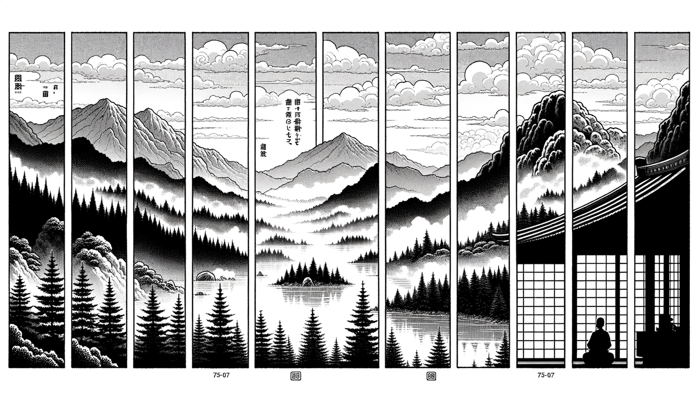

七十五巻 巻一覧
正法眼藏第7 一顆明珠
本ページは tools/gen_web_volumes.py が doc/正法眼蔵.txt から冒頭を抜粋して生成しています。図・詳細解説は今後の手編集で拡張できます。
出典（原文）: https://shomonji.or.jp/zazen/doc/genzou.html
（ローカル生成の全文: 全文ページ）
この巻の位置づけ（学習メモ）
道元『正法眼蔵』七十五巻の第7篇「一顆明珠」です。禅籍・経典への引用や語の行間が重なりやすいので、一度ですべてを要約に還元しない読み方を推奨します。問答 Bot では巻スコープにこの題名を含めると応答が安定しやすいことがあります。
語彙の足場
- 題名語：巻題「一顆明珠」は、道元が本章で特に扱う論点の看板です。辞書義だけに固定せず、本文中の用例で意味を確かめます。
- 引用と典故：公案・経文の引用は、一字一句の照応（何に答えているか）を押さえると全体が見えやすくなります。
- 学び方：冒頭だけでも音読し、分からない箇所は印を付けて後から問うとよいです。
本文（冒頭・自動抜粋）
出典はリポジトリ内 doc/正法眼蔵.txt です。原文の参照元: https://shomonji.or.jp/zazen/doc/genzou.html
裟婆世界大宋國、福州玄沙山院宗一大師、法諱師備、俗姓者謝なり。在家のそのかみ釣魚を愛し、舟を南臺江にうかべて、もろもろのつり人にならひけり。不釣自上の金鱗を不待にもありけん。唐の咸通のはじめ、たちまちに出塵をねがふ。舟をすてて山にいる。そのとし三十歳になりけり。浮世のあやうきをさとり、佛道の高貴をしりぬ。つひに雪峰山にのぼりて、眞覺大師に參じて、晝夜に辨道す。
あるときあまねく諸方を參徹せんため、囊をたづさへて出嶺するちなみに、脚指を石に築著して、流血し、痛楚するに、忽然として猛省していはく、是身非有、痛自何來（是の身有に非ず、痛み何れよりか來れる）。
すなはち雪峰にかへる。
雪峰とふ、那箇是備頭陀（那箇か是れ備頭陀）。
玄沙いはく、終不敢誑於人（終に敢へて人を誑かさず）。
このことばを雪峰ことに愛していはく、たれかこのことばをもたざらん、たれかこのことばを道得せん。
雪峰さらにとふ、備頭陀なんぞ徧參せざる。
師いはく、達磨不來東土、二祖不往西天（達磨東土に來らず、二祖西天に往かず）といふに、雪峰ことにほめき。
ひごろはつりする人にてあれば、もろもろの經書、ゆめにもかつていまだ見ざりけれども、こころざしのあさからぬをさきとすれば、かたへにこゆる志氣あらはれけり。雪峰も、衆のなかにすぐれたりとおもひて、門下の角立なりとほめき。ころもはぬのをもちゐ、ひとつをかへざりければ、ももつづりにつづれけり。はだへには紙衣をもちゐけり、艾草をもきけり。雪峰に參ずるほかは、自餘の知識をとぶらはざりけり。しかあれども、まさに師の法を嗣するちから、辨取せりき。
つひにみちをえてのち、人にしめすにいはく、盡十方世界、是一顆明珠。
ときに僧問、承和尚有言、盡十方世界是一顆明珠。學人如何會得（承るに和尚言へること有り、盡十方世界は是れ一顆の明珠と。學人如何が會得せん）。
師曰、盡十方世界是一顆明珠、用會作麼（盡十方世界は是れ一顆の明珠、會を用ゐて作麼）。
師、來日却問其僧（來日却つて其の僧に問ふ）、盡十方世界是一顆明珠、汝作麼生會（盡十方世界は是れ一顆の明珠、汝作麼生か會せる）。
僧曰、盡十方世界是一顆明珠、用會作麼（盡十方世界は是れ一顆の明珠、會を用ゐて作麼）。
師曰く、知、汝向黒山鬼窟裏作活計（知りぬ、汝黒山鬼窟裏に向つて、活計を作すことを）。
いま道取する盡十方世界是一顆明珠、はじめて玄沙にあり。その宗旨は、盡十方世界は、廣大にあらず微小にあらず、方圓にあらず、中正にあらず、活鱍鱍にあらず露廻廻にあらず。さらに、生死去來にあらざるゆゑに生死去來なり。恁麼のゆゑに、昔日曾此去（昔日は曾て此より去り）にして、而今從此來（而今は此より來る）なり。究辨するに、たれか片片なりと見徹するあらん、たれか兀兀なりと撿擧するあらん。
盡十方といふは、逐物爲己、逐己爲物（物を逐ひて己と爲し、己を逐ひて物と爲す）の未休なり。情生智隔（情生ずれば智隔たる）を隔と道取する、これ囘頭換面なり、展事投機なり。逐己爲物のゆゑに未休なる盡十方なり。機先の道理なるゆゑに機要の管得にあまれることあり。
是一顆珠は、いまだ名にあらざれども道得なり、これを名に認じきたることあり。一顆珠は、直須萬年なり。亙古未了なるに、亙今到來なり。身今あり、心今ありといへども明珠なり。彼此の草木にあらず、乾坤の山河にあらず、明珠なり。
學人如何會得。この道取は、たとひ僧の弄業識に相似せりとも、大用現、是大軌則なり。すすみて一尺水、一尺波を突兀ならしむべし。いはゆる一丈珠、一丈明なり。
いはゆるの道得を道取するに、玄沙の道は盡十方世界是一顆明珠、用會作麼なり。この道取は、佛は佛に嗣し、祖は祖に嗣し、玄沙は玄沙に嗣する道得なり。嗣せざらんと廻避せんに、廻避のところなかるべきにあらざれども、しばらく灼然廻避するも、道取生あるは現前の蓋時節なり。
玄沙來日問其僧、盡十方世界是一顆明珠、汝作麼生會。
これは道取す、昨日説定法なる、今日二枚をかりて出氣す。今日説不定法なり、推倒昨日點頭笑なり。
僧曰、盡十方世界是一顆明珠、用會作麼。
いふべし騎賊馬逐賊（賊馬に騎て賊を逐ふ）なり。
古佛爲汝説するには異類中行なり。しばらく廻光返照すべし、幾箇枚の用會作麼かある。試道するには、乳餠七枚、菜餠五枚なりといへども、湘之南、潭之北の教行なり。
玄沙曰、知、汝向黒山鬼窟裏作活計。
しるべし、日面月面は往古よりいまだ不換なり。日面は日面とともに共出す、月面は月面とともに共出するゆゑに、若六月道正是時、不可道我性熱（若し六月に正に是れ時と道ふも、我が姓は熱と道ふべからず）なり。
しかあればすなはち、この明珠の有始無始は無端なり。盡十方世界一顆明珠なり、兩顆三顆といはず。全身これ一隻の正法眼なり、全身これ眞實體なり、全身これ一句なり、全身これ光明なり、全身これ全心なり。全身のとき、全身の罣礙なし。圓陀陀地なり、轉轆轆なり。明珠の功徳かくのごとく見成なるゆゑに、いまの見色聞聲の觀音彌勒あり、現身説法の古佛新佛あり。
正當恁麼時、あるいは虛空にかかり、衣裏にかかる、あるいは頷下にをさめ、髻中にをさむる、みな盡十方世界一顆明珠なり。ころものうらにかかるを樣子とせり、おもてにかけんと道取することなかれ。髻中頷下にかかるを樣子とせり、髻表頷表に弄せんと擬することなかれ。醉酒の時節にたまをあたふる親友あり、親友にはかならずたまをあたふべし。たまをかけらるる時節、かならず醉酒するなり。
既是恁麼は、盡十方界にてある一顆明珠なり。しかあればすなはち、轉不轉のおもてをかへゆくににたれども、すなはち明珠なり。まさにたまはかくありけるとしる、すなはちこれ明珠なり。明珠はかくのごとくきこゆる聲色あり。既得恁麼なるには、われは明珠にはあらじとたどらるるは、たまにはあらじとうたがはざるべきなり。たどりうたがひ、取舍する作無作も、ただしばらく小量の見なり、さらに小量に相似ならしむるのみなり。
愛せざらんや、明珠かくのごとくの彩光きはまりなきなり。彩彩光光の片片條條は盡十方界の功徳なり。たれかこれを攙奪せん。行市に塼をなぐる人あらず、六道の因果に不落有落をわづらふことなかれ。不昧本來の頭正尾正なる、明珠は面目なり、明珠は眼睛なり。
しかあれども、われもなんぢも、いかなるかこれ明珠、いかなるかこれ明珠にあらざるとしらざる百思百不思は、明明の草料をむすびきたれども、玄沙の法道によりて、明珠なりける身心の樣子をもききしり、あきらめつれば、心これわたくしにあらず、起滅をたれとしてか明珠なり、明珠にあらざると取舍にわづらはん。たとひたどりわづらふとも、明珠にあらぬにあらず、明珠にあらぬがありておこさせける行にも念にもにてはあらざれば、ただまさに黒山鬼窟の進歩退歩、これ一顆明珠なるのみなり。
正法眼藏一顆明珠第七
爾時嘉禎四年四月十八日雍州宇治縣觀音導利興聖寶林寺示衆
寛元元年癸卯閏七月二十三日書寫越州吉田郡志比莊吉峰寺院主房侍者比丘懷弉
図解（4コマ・AI生成）
教義の根拠は本文・出典に従い、漫画は比喩の補助に留めてください。

深掘り（読解のコツ）
- 道元文は定義の羅列に見えても、多くの場合誤解への遮断と正伝の姿勢が背骨になっています。
- 「当体」「現成」「即」などの語が出たら、その巻独自の差別相にどう接続しているかをメモしておくとよいです。